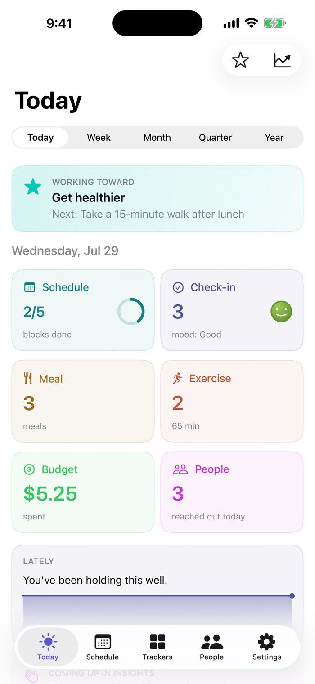

Time-blocked days. Two-tap logging. Gentle check-ins. Private by default.
For iPhone. Mac too. Android is planned.

Not from laziness. From how an ADHD brain meets time.
3 pm and 8 pm feel the same distance away. A list doesn't fix that. A timeline you can see does.
If logging takes five taps, it doesn't happen. The moment passes.
Tasks, meals, money. People too. It's not that you don't care. The reminder never fires.
Most apps punish the gap. Broken streaks, red badges. You stop opening them.
AideyHD is built by one person with ADHD, for himself first. Every choice below follows from that.
Try it. This is the real flow, rebuilt for the browser. Tap a chip, then tap Log.
Nothing logged yet. That's fine.
The chips are yours to curate. Pin what you repeat; one-offs stay out of the way. And every action has an undo, so a stray tap costs nothing.
Schedule and check-ins are the core. Everything else is optional, off until you want it.
Your day, drawn to scale. Reminders at start and end. Repeats fill themselves in.
Did it happen? How do you feel? Two taps and done. Moods are faces with names, not numbers.
Pin what you eat often. Log it again in a tap.
A walk counts. Log movement in a tap and watch the week add up.
Amount and category. A record, not a budgeting system.
Birthdays and gentle stay-in-touch nudges. Add a note after you talk, so the next one has context.
Two ways of looking back at what the trackers already hold.
Today's tiles, or zoom out to a week, a month, a quarter, a year. Trends in bars. Mood as a word and a number — Good · 3.7 of 5 — so the scale is never in doubt.
Everything you've logged, grouped by day. Filter down to one tracker, tap an entry to edit it, or reopen a check-in to add to what you wrote.
Every ADHD app promises to be different. Here are the actual decisions, with what they replaced.
A broken streak becomes a reason to quit. Coming back should feel like nothing happened.
Instead of: points, virtual pets, "don't break the chain."
Confirmation dialogs get dismissed on reflex. Every delete is instant, with five seconds to take it back.
Instead of: dialogs nobody reads.
Every extra tap is a drop-off point. Chips are templates you pin, so your one-tap row holds what you actually repeat.
Instead of: auto-filled recents. A $340 flight is recent; it isn't re-loggable.
Blocks drawn to scale make the shape of the day visible. That's the direct counter to time blindness.
Instead of: the checklist.
Face ID protects your data. But a check-in from a notification opens above the lock, because the moment doesn't wait.
Instead of: security that costs the log.
A block you didn't do turns gray, not red. Tap it any time to reflect — the mood you log there keeps its full color even though the block doesn't.
Instead of: overdue badges.
It knows the time of day, which trackers you use, and what the block in front of it actually is. After 9 pm it goes quiet.
Instead of: "Drink some water!" and taps that lead nowhere.
Losing touch is an ADHD casualty too. Reaching out gets a small celebration, and you can jot what you talked about so the next one has somewhere to start.
Instead of: "overdue: call Mom (12 days)."
A mic sits next to the longer fields — a note, the brain dump, a reach-out. Recognition runs on your device wherever the system allows it.
Instead of: sending your voice off-device to save you some typing.
Same events, different sentences. Flip it.
When a block is coming up, it shows it — tinted and iconed to match what the block actually is, not just the time. When nothing is, a small invitation matched to the hour on your clock right now.
After 9 pm the widget goes quiet. No app should talk to you at midnight.
Sync is off until you turn it on. No account, no ads, no analytics on your logs.
And you can leave: export everything as CSV or JSON, any time.
No subscription, no locked features, no ads. If it helps you, there's a tip jar in Settings.
Billing confusion is the most common complaint about apps in this space. This is the answer to it.
No. It's a personal secretary: schedule, logs, reminders. No diagnoses, no advice, no clinical claims.
No. Schedule and check-ins work from the first minute. Turn on meals, exercise, budget, or the brain dump whenever you want them.
On your device. iCloud sync is an optional toggle, off by default, and goes through your own iCloud account.
Only when you tap the mic. It's there for fields worth talking instead of typing, and recognition runs on your device wherever the system supports it.
iPhone first. There's a Mac app too. Android is planned.
The beta opens soon on TestFlight. The link will be right here.
One developer with ADHD who wanted an app that didn't shame him. This is it.